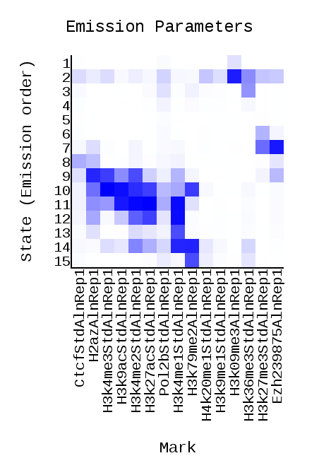
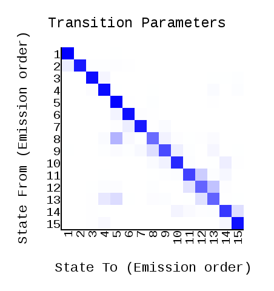

<center><h1>ChromHMM Report</h1></center>
Input Directory: /content/drive/MyDrive/bionformatica/binarizedData/<br>
Output Directory: /content/drive/MyDrive/bionformatica/learnData<br>
Number of States: 15<br>
Assembly: OverlapEnrichment<br>
Full ChromHMM command: LearnModel -b 200 /content/drive/MyDrive/bionformatica/binarizedData/ /content/drive/MyDrive/bionformatica/learnData 15 OverlapEnrichment
<h1>Model Parameters</h1>
<br>
<li><a href="emissions_15.svg">Emission Parameter SVG File</a><br>
<li><a href="emissions_15.txt">Emission Parameter Tab-Delimited Text File</a><br>
<br>
<li><a href="transitions_15.svg">Transition Parameter SVG File</a><br>
<li><a href="transitions_15.txt">Transition Parameter Tab-Delimited Text File</a><br><br>
<li><a href="model_15.txt">All Model Parameters Tab-Delimited Text File</a> <br>
<h1>Genome Segmentation Files</h1>
<li><a href="Huvec_15_segments.bed">Huvec_15 Segmentation File (Four Column Bed File)</a><br>
<br>
Custom Tracks for loading into the <a href="http://genome.ucsc.edu">UCSC Genome Browser</a>:<br>
<li><a href=Huvec_15_dense.bed>Huvec_15 Browser Custom Track Dense File</a> <br>
<li><a href=Huvec_15_expanded.bed>Huvec_15 Browser Custom Track Expanded File</a><br>
<h1>State Enrichments</h1>
<h2>Huvec_15 Enrichments</h2>
